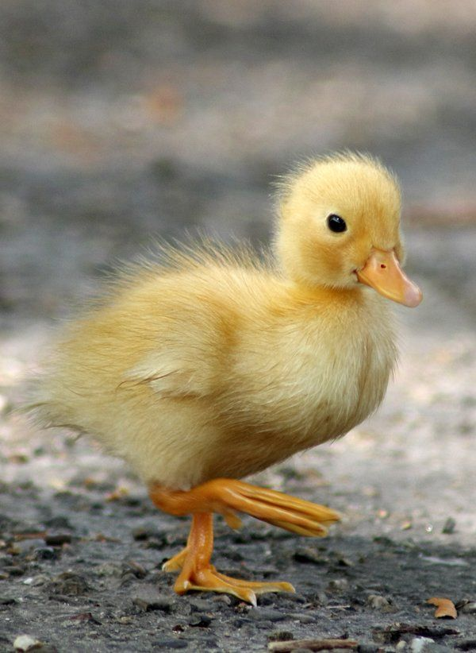

 Duck is the common name for numerous species of waterfowl in the family Anatidae. Ducks are generally smaller and shorter-necked than swans and geese, which are members of the same family. Divided among several subfamilies, they are a form taxon; they do not represent a monophyletic group (the group of all descendants of a single common ancestral species), since swans and geese are not considered ducks. Ducks are mostly aquatic birds, and may be found in both fresh water and sea water.